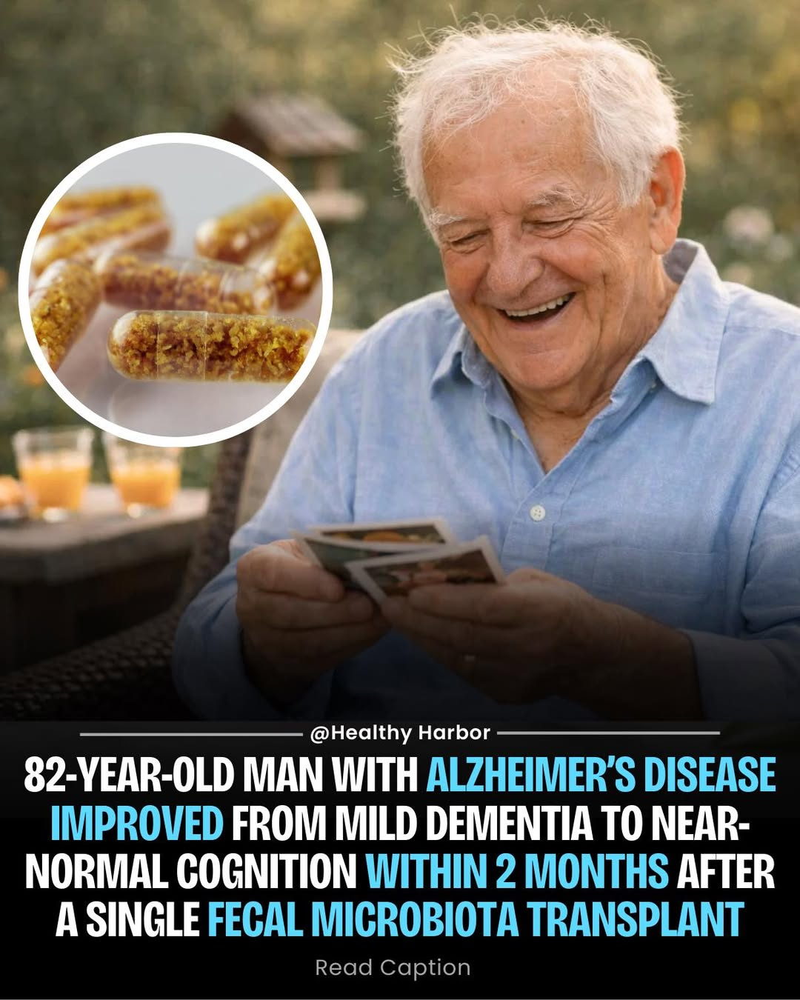

Case report: major Alzheimer's symptom improvement after fecal microbiota transplantation
Louis shares a case report of an 82-year-old man with Alzheimer's whose cognition improved rapidly after FMT. A single case cannot show effectiveness.